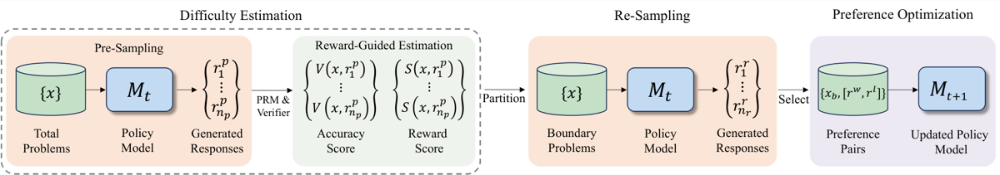
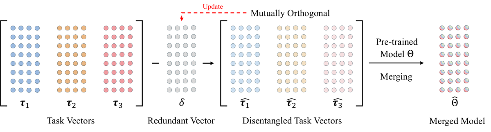

Runxi Cheng 程润曦
Master’s Student in Artificial Intelligence Tsinghua UniversityBeijing, China
I am advised by Prof. Chun Yuan at Tsinghua University. I received my Bachelor’s degree in Information Management and Information Systems from Beihang University in 2022, and have been a research intern at Microsoft Research Asia (Artificial Intelligence Reasoning Group), mentored by Yeyun Gong and Weizhu Chen, and at Tencent IEG (Basic Research Group).
My research aims to make large language models more capable and more efficient to build. I work on scalable LLM pre-training and architectures — mixture-of-experts and conditional memory — on model merging and knowledge transfer, including data-free merging with task vectors and knowledge distillation, and on reasoning through self-training and data synthesis.
News
Memory Grafting reference 1 accepted to NeurIPS 2026.
Released Memory Grafting reference 1 on arXiv — scaling LLM pre-training with offline conditional memory built from a frozen pretrained model.
REVIVE reference 4 (spectral analysis of sequential knowledge-editing collapse) accepted to ACL 2026 Main Conference.
OptMerge reference 5 (unifying multimodal LLMs via model merging) accepted to ICLR 2026.
The SIGMA reference 10 technical report from Microsoft Research is out on arXiv; I contributed to its technical exploration.
Released Mixture of Neuron Experts (MoNE) reference 7 on arXiv — matching MoE with 50% of activated MoE-layer parameters.
HS-STaR reference 6 accepted to EMNLP 2025 as an Oral presentation.
Two papers accepted to ICML 2025: WUDI-Merging reference 2 (first author) and the Kendall’s τ ranking loss reference 3 for distillation (co-first author).
Joined Microsoft Research Asia (Artificial Intelligence Reasoning Group) as a research intern.
Joined Tencent IEG (Basic Research Group) as a research intern.
Publications
Conference Papers (6 papers)
-
[1]
Memory Grafting: Scaling Language Model Pre-training via Offline Conditional Memory
Conference on Neural Information Processing Systems (NeurIPS) 2026
TL;DR Stores a frozen pretrained model’s offline hidden states for frequent n-grams as lookup memory, improving LLM pre-training over MoE and Engram baselines with limited overhead.
arXivPDFAbstract
Scaling conditional memory offers a promising way to increase language-model capacity, but existing methods such as Engram learn large memory tables from scratch during pre-training, making memory scaling expensive and sometimes ineffective. We propose Memory Grafting, a conditional memory scaling method that utilizes frozen hidden states from a grafting model as conditional n-gram memory. Given frequent local n-grams, we run the grafting model offline, store final-token hidden representations as memory values, and let the recipient model retrieve them through exact longest-match suffix lookup. Retrieved memories are adapted by lightweight projections and gates, while a hash-based Engram fallback preserves coverage for unmatched contexts. Since the grafting model is only run offline and exact lookup has expected O(1) complexity with respect to memory-bank size, Memory Grafting expands external latent capacity with limited training and inference overhead. Experiments under matched recipient architectures and pre-training budgets show that Memory Grafting improves over both MoE and vanilla Engram baselines. In the 2.8B-scale setting, it improves the average benchmark score from 51.95 for MoE and 52.43 for vanilla Engram to 53.86. In the 0.92B-scale setting, all grafting-model variants improve over the baselines, with Qwen3.5-35B-A3B giving the strongest gains. These results suggest that pretrained models can serve as reusable constructors of external latent memory, providing a practical step toward scaling future language models beyond trainable parameters alone.
BibTeX
@article{cheng2026memorygrafting, title = {Memory Grafting: Scaling Language Model Pre-training via Offline Conditional Memory}, author = {Cheng, Runxi and Guan, Yuchen and Wei, Yongxian and Sun, Qianpu and Li, Qixiu and Du, Sinan and Xiong, Feng and Yuan, Chun and Lu, Yan and Gong, Yeyun}, journal = {arXiv preprint arXiv:2605.20948}, year = {2026} } -
[2]
Whoever Started the Interference Should End It: Guiding Data-Free Model Merging via Task Vectors
International Conference on Machine Learning (ICML) 2025
TL;DR Shows that a linear layer’s task vectors lie approximately in the subspace spanned by its inputs, and uses them to eliminate merging interference without any data — +10.9% over data-free baselines.
PaperarXivPDFCodeAbstract
Model merging seeks to integrate task-specific expert models into a unified architecture while preserving multi-task generalization capabilities, yet parameter interference between constituent models frequently induces performance degradation. Although prior work has explored many merging strategies, resolving interference without additional data for retraining or test-time computation remains challenging. In this paper, we theoretically demonstrate that the task vectors of the linear layer constitute an approximate linear subspace for its corresponding input. Therefore, we can minimize interference under the guidance of task vectors. Based on this insight, we propose WUDI-Merging (Whoever started the interference shoUld enD It), a simple yet effective model merging method that eliminates interference without any additional data or rescaling coefficients. Comprehensive empirical evaluations across vision and language benchmarks demonstrate our method’s superiority, achieving state-of-the-art performance in data-free model merging scenarios (average 10.9% improvement versus baseline methods) while even outperforming mainstream test-time adaptation approaches by 3.3%, and only very few computing resources are required.
BibTeX
@inproceedings{pmlr-v267-cheng25h, title = {Whoever Started the Interference Should End It: Guiding Data-Free Model Merging via Task Vectors}, author = {Cheng, Runxi and Xiong, Feng and Wei, Yongxian and Zhu, Wanyun and Yuan, Chun}, booktitle = {Proceedings of the 42nd International Conference on Machine Learning}, pages = {10121--10143}, year = {2025}, volume = {267}, series = {Proceedings of Machine Learning Research}, publisher = {PMLR}, url = {https://proceedings.mlr.press/v267/cheng25h.html} } -
[3]
Enhancing Logits Distillation with Plug&Play Kendall’s τ Ranking Loss
International Conference on Machine Learning (ICML) 2025
TL;DR A plug-and-play Kendall’s τ ranking loss complements KL-based logit distillation by rebalancing gradients toward low-probability classes, consistently improving students on CIFAR-100, ImageNet and COCO.
PaperarXivPDFCodeAbstract
Knowledge distillation typically minimizes the Kullback–Leibler (KL) divergence between teacher and student logits. However, optimizing the KL divergence can be challenging for the student and often leads to sub-optimal solutions. We further show that gradients induced by KL divergence scale with the magnitude of the teacher logits, thereby diminishing updates on low-probability channels. This imbalance weakens the transfer of inter-class information and in turn limits the performance improvements achievable by the student. To mitigate this issue, we propose a plug-and-play auxiliary ranking loss based on Kendall’s τ coefficient that can be seamlessly integrated into any logit-based distillation framework. It supplies inter-class relational information while rebalancing gradients toward low-probability channels. We demonstrate that the proposed ranking loss is largely invariant to channel scaling and optimizes an objective aligned with that of KL divergence, making it a natural complement rather than a replacement. Extensive experiments on CIFAR-100, ImageNet, and COCO datasets, as well as various CNN and ViT teacher-student architecture combinations, demonstrate that our plug-and-play ranking loss consistently boosts the performance of multiple distillation baselines.
BibTeX
@inproceedings{pmlr-v267-guan25a, title = {Enhancing Logits Distillation with Plug\&Play Kendall's $\tau$ Ranking Loss}, author = {Guan, Yuchen and Cheng, Runxi and Liu, Kang and Yuan, Chun}, booktitle = {Proceedings of the 42nd International Conference on Machine Learning}, pages = {20537--20552}, year = {2025}, volume = {267}, series = {Proceedings of Machine Learning Research}, publisher = {PMLR}, url = {https://proceedings.mlr.press/v267/guan25a.html} } -
[4]
Spectral Characterization and Mitigation of Sequential Knowledge Editing Collapse
Annual Meeting of the Association for Computational Linguistics (ACL) 2026, Main Conference (Long Papers)
TL;DR Shows sequential edits collapse LLMs by disrupting dominant singular directions of pretrained weights, and proposes REVIVE, a plug-and-play filter that preserves that subspace across up to 20,000 edits.
PaperarXivPDFCodeAbstract
Sequential knowledge editing in large language models often causes catastrophic collapse of the model’s general abilities, especially for parameter-modifying methods. Existing approaches mitigate this issue through heuristic constraints on parameter updates, yet the mechanisms underlying such degradation remain insufficiently understood. In this work, we present a spectral analysis of sequential knowledge editing and show that a model’s general abilities are closely associated with dominant singular directions of pretrained weight matrices. These directions are highly sensitive to perturbations and are progressively disrupted by repeated edits, closely tracking the collapse in both editing efficacy and general performance. Building on this insight, we propose REVIVE, a plug-and-play framework that stabilizes sequential editing by explicitly preserving the dominant singular subspace. REVIVE represents parameter updates in the spectral basis of the original weights and filters components that would interfere with the protected region. Extensive experiments across multiple models and benchmarks show that REVIVE consistently improves editing efficacy while substantially preserving general abilities under long-horizon sequential editing, including extreme settings with up to 20,000 edits.
BibTeX
@inproceedings{zhang-etal-2026-spectral, title = {Spectral Characterization and Mitigation of Sequential Knowledge Editing Collapse}, author = {Zhang, Chi and Zhang, Mengqi and Ye, Xiaotian and Cheng, Runxi and Zhou, Zisheng and Zhou, Ying and Ren, Pengjie and Chen, Zhumin}, booktitle = {Proceedings of the 64th Annual Meeting of the Association for Computational Linguistics (Volume 1: Long Papers)}, pages = {30009--30032}, year = {2026}, address = {San Diego, California, United States}, publisher = {Association for Computational Linguistics}, doi = {10.18653/v1/2026.acl-long.1384}, url = {https://aclanthology.org/2026.acl-long.1384/} } -
[5]
OptMerge: Unifying Multimodal LLM Capabilities and Modalities via Model Merging
Previously titled “Unifying Multimodal Large Language Model Capabilities and Modalities via Model Merging”.
International Conference on Learning Representations (ICLR) 2026
TL;DR The first model-merging benchmark for multimodal LLMs, plus OptMerge, a data-free method that denoises task vectors to merge expert capabilities and modalities into one model.
PaperarXivPDFCodeAbstract
Foundation models update slowly due to resource-intensive training, whereas domain-specific models evolve rapidly between releases. Model merging seeks to combine multiple expert models into a single, more capable model, reducing storage and serving costs while supporting decentralized development. Despite its potential, previous studies have primarily focused on merging visual classification models or Large Language Models (LLMs) for code and math tasks. Recently, Multimodal LLMs (MLLMs) that extend LLMs through large-scale multimodal training have gained traction. However, there lacks a benchmark for model merging research that clearly divides the tasks for MLLM training and evaluation. In this paper, (i) we introduce a model merging benchmark for MLLMs, which includes multiple tasks such as VQA, Geometry, Chart, OCR, and Grounding, studying both LoRA and full fine-tuning models. Moreover, we explore how model merging can combine different modalities (e.g., vision-language, audio-language, and video-language models), moving toward the Omni-language model. (ii) We implement 10 model merging algorithms on the benchmark. Furthermore, we propose a novel method that removes noise from task vectors and robustly optimizes the merged vector based on a loss defined over task vector interactions, achieving an average performance gain of 2.48%. (iii) We find that model merging offers a promising way for building improved MLLMs without requiring training data. Our results also demonstrate that the complementarity among multiple modalities outperforms individual modalities.
BibTeX
@inproceedings{wei2026optmerge, title = {OptMerge: Unifying Multimodal {LLM} Capabilities and Modalities via Model Merging}, author = {Wei, Yongxian and Cheng, Runxi and Jin, Weike and Yang, Enneng and Shen, Li and Hou, Lu and Du, Sinan and Yuan, Chun and Cao, Xiaochun and Tao, Dacheng}, booktitle = {The Fourteenth International Conference on Learning Representations}, year = {2026}, url = {https://openreview.net/forum?id=Me0n0iESJY} } -
[6]
HS-STaR: Hierarchical Sampling for Self-Taught Reasoners via Difficulty Estimation and Budget Reallocation
Conference on Empirical Methods in Natural Language Processing (EMNLP) 2025, Main Conference — Oral

Figure The HS-STaR framework: difficulty estimation by pre-sampling, budget re-allocation to boundary problems, and preference optimization. TL;DR Estimates problem difficulty with lightweight reward-guided pre-sampling, then reallocates the sampling budget to boundary-level problems — better math self-training at no extra sampling cost.
PaperarXivPDFCodeAbstract
Self-taught reasoners (STaRs) enhance the mathematical reasoning abilities of large language models (LLMs) by leveraging self-generated responses for self-training. Recent studies have incorporated reward models to guide response selection or decoding, aiming to obtain higher-quality data. However, they typically allocate a uniform sampling budget across all problems, overlooking the varying utility of problems at different difficulty levels. In this work, we conduct an empirical study and find that problems near the boundary of the LLM’s reasoning capability offer significantly greater learning utility than both easy and overly difficult ones. To identify and exploit such problems, we propose HS-STaR, a Hierarchical Sampling framework for Self-Taught Reasoners. Given a fixed sampling budget, HS-STaR first performs lightweight pre-sampling with a reward-guided difficulty estimation strategy to efficiently identify boundary-level problems. Subsequently, it dynamically reallocates the remaining budget toward these high-utility problems during a re-sampling phase, maximizing the generation of valuable training data. Extensive experiments across multiple reasoning benchmarks and backbone LLMs demonstrate that HS-STaR significantly outperforms other baselines without requiring additional sampling budget.
BibTeX
@inproceedings{xiong-etal-2025-hs, title = {{HS}-{ST}a{R}: Hierarchical Sampling for Self-Taught Reasoners via Difficulty Estimation and Budget Reallocation}, author = {Xiong, Feng and Xu, Hongling and Wang, Yifei and Cheng, Runxi and Wang, Yong and Chu, Xiangxiang}, booktitle = {Proceedings of the 2025 Conference on Empirical Methods in Natural Language Processing}, pages = {5539--5555}, year = {2025}, address = {Suzhou, China}, publisher = {Association for Computational Linguistics}, doi = {10.18653/v1/2025.emnlp-main.282}, url = {https://aclanthology.org/2025.emnlp-main.282/} }


Preprints (3 papers)
-
[7]
Mixture of Neuron Experts
Under review at the Conference on Neural Information Processing Systems (NeurIPS) 2026
TL;DR Decomposes MoE experts into neuron-granular experts and keeps only the top-k activated neurons in each, matching standard MoE with half of the activated MoE-layer parameters.
arXivPDFCodeAbstract
In this work, we first explore whether the parameters activated by the MoE layer remain highly sparse at inference. We perform a sparsification study on several representative MoE models. For each expert, we rank parameters by the magnitude of their activations from the gate projection and progressively prune the activated subset. Pruning up to 60% of parameters within that subset causes only negligible task-performance degradation; substantial drops occur only after more than 90% are removed. We further decompose experts into neuron-granular MoE and visualize their activation values, finding that most neuron activations are near zero. This observation motivates us to select only high-activation neuron experts during pretraining. Based on this insight, we propose Mixture of Neuron Experts (MoNE). MoNE achieves neuron-granular expert selection by only applying a simple top-k selection within each expert, incurs negligible latency, and requires no additional routing parameters or inter-expert communication. Extensive experiments demonstrate that MoNE matches traditional MoE performance while activating only 50% of the MoE-layer parameters, and it consistently outperforms traditional MoE when compared at equal numbers of activated parameters. These results suggest that MoNE is a practical approach to improving parameter utilization and inference efficiency in MoE-like models.
BibTeX
@article{cheng2025mixtureneuronexperts, title = {Mixture of Neuron Experts}, author = {Cheng, Runxi and Guan, Yuchen and Ding, Yucheng and Hu, Qingguo and Wei, Yongxian and Yuan, Chun and Shen, Yelong and Chen, Weizhu and Gong, Yeyun}, journal = {arXiv preprint arXiv:2510.05781}, year = {2025} } -
[8]
Multi-Task Model Merging via Adaptive Weight Disentanglement
arXiv preprint, under review

Figure Adaptive Weight Disentanglement: a redundant vector δ is subtracted from the task vectors to obtain mutually orthogonal task vectors before merging. TL;DR Subtracts a learned shared redundant vector so that task vectors become closer to orthogonal, reducing interference and improving multi-task model merging.
arXivPDFCodeAbstract
Model merging has recently gained attention as an economical and scalable approach to incorporate task-specific weights from various tasks into a unified multi-task model. For example, in Task Arithmetic (TA), adding the fine-tuned weights of different tasks can enhance the model’s performance on those tasks, while subtracting them leads to task forgetting. Although TA is highly effective, interference among task still hampers the performance of the merged model. Existing methods for handling conflicts between task generally rely on empirical selection, resulting in suboptimal performance. In this paper, we introduce an Adaptive Weight Disentanglement method. We begin by theoretically proving that task vectors employed in model merging should be orthogonal to minimize interference among tasks. Guided by this insight, we initialize redundant vectors such that, when subtracted from the original task vectors, the resulting vectors exhibit increased orthogonality. Additionally, we impose an norm constraint on the redundant vectors to preserve the performance of the task-specific models. Experimental results demonstrate the effectiveness of our proposed technique: it successfully extracts redundant vectors, and after their subtraction, the task vectors not only retain robust performance but also achieve superior fusion outcomes.
BibTeX
@article{xiong2024multitask, title = {Multi-Task Model Merging via Adaptive Weight Disentanglement}, author = {Xiong, Feng and Cheng, Runxi and Chen, Wang and Zhang, Zhanqiu and Guo, Yiwen and Yuan, Chun and Xu, Ruifeng}, journal = {arXiv preprint arXiv:2411.18729}, year = {2024} } -
[9]
Learning to Pose Problems: Reasoning-Driven and Solver-Adaptive Data Synthesis
Earlier arXiv versions were titled “… for Large Reasoning Models”.
arXiv preprint, under review
TL;DR Trains a problem generator that reasons about problem design before writing, and uses solver feedback as a reward to synthesize problems adapted to the solver’s competence.
arXivPDFCodeAbstract
Data synthesis for training large reasoning models offers a scalable alternative to limited, human-curated datasets, enabling the creation of high-quality data. However, existing approaches face several challenges: (i) indiscriminate generation that ignores the solver’s ability and yields low-value problems, or reliance on complex data pipelines to balance problem difficulty; and (ii) a lack of reasoning in problem generation, leading to shallow problem variants. In this paper, we develop a problem generator that reasons explicitly to plan problem directions before synthesis and adapts difficulty to the solver’s ability. Specifically, we construct related problem pairs and augment them with intermediate problem-design CoT produced by a reasoning model. These data are used to bootstrap problem-design strategies in the generator. Then, we treat the solver’s feedback on synthetic problems as a reward signal, enabling the generator to calibrate difficulty and produce complementary problems near the edge of the solver’s competence. Extensive experiments on 10 mathematical and general reasoning benchmarks show that our proposed framework achieves a cumulative average improvement of 3.4%, demonstrating robust generalization across both language and vision-language models.
BibTeX
@article{wei2025learning, title = {Learning to Pose Problems: Reasoning-Driven and Solver-Adaptive Data Synthesis}, author = {Wei, Yongxian and Zhao, Yilin and Hu, Zixuan and Shen, Li and Chen, Xinrui and Cheng, Runxi and Du, Sinan and Yu, Hao and Yuan, Chun and Li, Dian}, journal = {arXiv preprint arXiv:2511.09907}, year = {2025} }


Other Contributions (1 paper)
-
[10]
SIGMA: An AI-Empowered Training Stack on Early-Life Hardware
Technical report, arXiv 2025
The Microsoft Research report acknowledges me as a contributor for technical exploration (Appendix A); I am not on the author byline.
TL;DR An open-source training stack for early-life AI accelerators: 94.45% effective cluster utilization, and a 200B MoE model trained stably on 2,048 accelerators.
arXivPDFCodeAbstract
Enabling large-scale training on early-life AI accelerators faces three core challenges: frequent system disruptions and undefined failure modes that undermine reliability, numerical errors and training instabilities that threaten correctness and convergence, and complex parallelism optimization with unpredictable local noise that degrades efficiency. SIGMA is an open-source training stack that addresses these. Its core, the Lucia Training Platform (LTP), has achieved 94.45% effective cluster accelerator utilization over five months while substantially reducing node recycling and job-recovery times. On top of LTP, the Lucia Training Framework (LTF) trained SIGMA-MoE, a 200B MoE model, on 2,048 accelerators. It reached 21.08% MFU and state-of-the-art downstream accuracy, with only one stability incident over 75 days.
BibTeX
@misc{qu2025sigma, title = {SIGMA: An AI-Empowered Training Stack on Early-Life Hardware}, author = {Lei Qu and Lianhai Ren and Peng Cheng and Rui Gao and Ruizhe Wang and Tianyu Chen and Xiao Liu and Xingjian Zhang and Yeyun Gong and Yifan Xiong and Yucheng Ding and Yuting Jiang and Zhenghao Lin and Zhongxin Guo and Ziyue Yang}, year = {2025}, eprint = {2512.13488}, archivePrefix = {arXiv}, primaryClass = {cs.DC}, url = {https://arxiv.org/abs/2512.13488} }

Research Experience
-
Microsoft Research Asia
Research Intern, Artificial Intelligence Reasoning Group
- Contributed to the design and implementation of MSRA’s next-generation large language model.
- Foundational research on LLM pre-training methodology, with an emphasis on training stability and efficiency.
- Research on optimizing mixture-of-experts (MoE) architectures for parameter efficiency and inference performance.
Related work Memory Grafting reference 1, MoNE reference 7, SIGMA (contributor) reference 10
-
Tencent
Research Intern, IEG · Basic Research Group
- Research on model merging and parameter-efficient fine-tuning of large language models.
- Completed two papers on model merging, one of which was accepted to ICML 2025.
Education
-
Tsinghua University
Master’s in Artificial Intelligence
Coursework Artificial Neural Network (A), Big Data Analysis (A−), Artificial Intelligence Technology Frontier and Industrial Application (A−)
-
Beihang University
Bachelor’s in Information Management and Information Systems
Coursework Deep Learning and Artificial Intelligence (90), Statistical Learning (93), Modern Programming (91), C Language Programming (95)